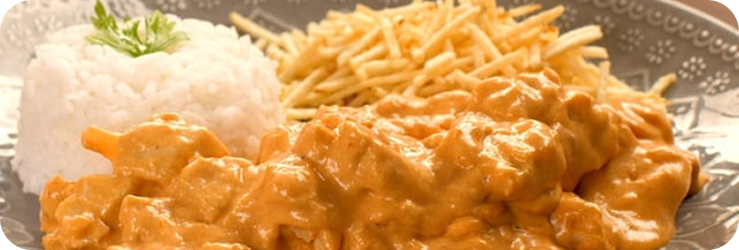

Home
Strogonoff

Descrição
Receita de Strogonoff Rápido delicioso. Uma versão prática e saborosa do clássico strogonoff, ideal para quem busca uma
refeição rápida e saborosa. Perfeita para o almoço do dia a dia! Feita com peito de frango, cebola, alho, óleo, MAGGI
Meu Segredo Frango, ketchup, mostarda e NESTLÉ Creme de Leite.
Ingredientes
- 1 colher (sopa) de óleo
- 1 cebola pequena picada
- 1 dente de alho picado
- 300 g de peito de frango em tiras
- 1 envelope de Tempero MAGGI® Meu Segredo Frango
- 2 colheres (sopa) de ketchup
- 2 colheres (sopa) de mostarda
- 1 caixinha de NESTLÉ® Creme de Leite
Passos
- Em uma panela, em fogo médio, aqueça o óleo e refogue a cebola e o alho até dourarem
- Adicione o peito de frango em tiras e refogue até que esteja dourado. Tempere com o MAGGI Meu Segredo Frango.
- Misture o ketchup, a mostarda e o NESTLÉ Creme de Leite. Cozinhe por alguns minutos até que os ingredientes estejam bem incorporados.
- Sirva imediatamente, acompanhando arroz branco ou batata palha.